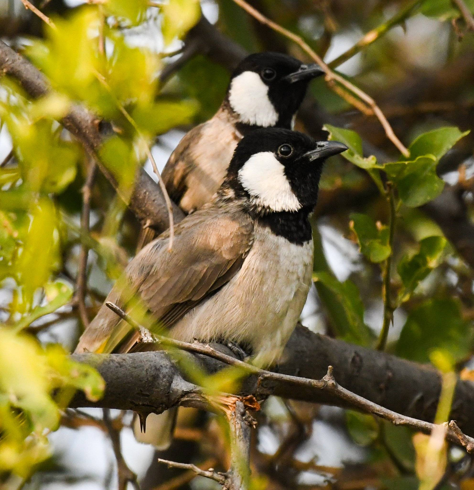

تنهض رؤيتنا من مفارقة معاصرة
"نلتقي كرابطة رقمية موحدة خلف الشاشات، لكننا نتحرك كإرادات فردية تغير أرض الواقع. إن أزمة المناخ والتصحر التي يعيشها العراق اليوم تفرض علينا كشباب أن نترك عاطفة 'التشجير الموسمي' المحدودة بالمكان والميزانيات، وننتقل فوراً إلى فضاء 'التنمية المستدامة' المبني على خطط علمية حقيقية."
"فبناء المدن الخضراء يحتاج وعياً معرفياً يتجاوز الحلول الترقيعية العابرة ليصبح إرثاً حياً تحتمي به الأجيال القادمة. ومن هنا، تفتح هذه المنصة العلمية الباب لكل أبناء وبنات شعبنا العراقي أينما وجدوا؛ من جبال زاخو في أقصى الشمال إلى شواطئ الفاو في أقصى الجنوب، ومن صحراء الرطبة غرباً إلى مرتفعات بنجوين شرقاً."
"لم يعد بُعد المسافة عائقاً، سنطوي مسافات جغرافيتنا رقمياً لنلتحم في غرس واقعي، ونعيد معاً صياغة الهوية البيئية لأرضنا العراقية الجَمَّاء."
الفكرة علمية.. والتنفيذ بسواعدنا.
5,000 شجرة ألبيزيا
إقامة أحزمة وقائية مستدامة لكسر حدة الرياح الصحراوية وتثبيت التربة.
5,000 شجرة سدر
تعزيز الغطاء الأصيل المقاوم للجفاف وإعادة التوازن البيئي للبيئة المحلية.
رحيل الألحان: حين تصمت بساتيننا

البلبل العراقي
لم يعد البلبل العراقي يغرد كما كان في صباحات بغداد والبصرة؛ يواجه اليوم تهديدات وجودية من تجريف البساتين والصيد الجائر وموجات الجفاف الشديدة...
تعرّف على القصة كاملة ←
الصقر الحر العراقي
يتربع الصقر الحر العراقي كرمزٍ للشموخ والهوية الوطنية، لكنه يواجه اليوم أشرس حملات الصيد الجائر والتهريب عبر الحدود إلى دول الخليج...
تعرّف على القصة كاملة ←دليل الإنبات العلمي (Scarification Guide)
كيف ننتقل من العاطفة العابرة إلى المعرفة الاستراتيجية لرفع نسب نجاح البذور القاسية?
- ١. التخديد المائي (Thermal Scarification): بذور الألبيزيا تمتلك غلافاً شمعياً سميكاً يمنع دخول الماء. يُنصح بنقع البذور في ماء ساخن (وليس مغلي) لمدة ١٢-٢٤ ساعة حتى تتفتح وتنتفخ وتصبح جاهزة للزراعة.
- ٢. التخديد الميكانيكي (Mechanical Scarification): كبديل سريع ومثالي للمجموعات الصغيرة، يمكن خدش أو كشط طرف الغلاف الخارجي الصلب للبذرة برفق باستخدام مقص أظافر أو ورق سنفرة (دون مساس الجنين الداخلي) للسماح بنفاذ الماء الفوري وسرعة الإنبات.
- ٣. عمق الغرس العلمي (Systematic Depth): تُزرع البذور المعالجة على عمق سطحي حذر لا يتجاوز ١ إلى ٢ سم في تربة جيدة التصريف لتأمين الأكسجين الكافي للنمو.
- ٤. مراقبة الرطوبة الحذرة (Measured Watering): الحفاظ على رطوبة التربة خفيفة وبدون إغراق، لتفادي تعفن الجذور في مراحل الإنبات الحرجة الأولى.
جدول المراقبة المعرفي ومعدلات النمو المتوقعة:
| المرحلة الزمنية | معدل نمو الألبيزيا المتوقع | معدل نمو السدر المتوقع |
|---|---|---|
| الأسبوع الأول | بروز الجذير وانشقاق التربة (٢-٤ سم) | ظهور الأوراق الأولى والنمو الحذر (٣-٥ سم) |
| الأسبوع الثاني | ظهور الأوراق الريشية المركبة (٦-١٠ سم) | استطالة الساق وزيادة التفرع الجذري (٨-١٤ سم) |
بين مطرقة الضغوط السياسية وسندان الاندثار البيئي
٨ تموز، ٢٠٢٦ما نشهده اليوم ليس مجرد تغير مناخي عالمي، بل "تجريف ممنهج" للهوية البيئية للعراق، استغل فيه المتربصون هشاشة السلطة الرقابية لفرض واقع بيئي قاتم...
اقرأ المقال كاملاً ←البلبل العراقي في مواجهة الاندثار: لماذا نحتاج إلى "الإطلاق اللين"؟
٢٨ حزيران، ٢٠٢٦يُعرف الإطلاق اللين علمياً باسم "طوق النجاة البيئي"، وهو منهجية علمية لإعادة توطين الطيور تعتمد على مرحلة انتقالية تمنحها فرصة لاستعادة لياقتها والتأقلم قبل الاعتماد الكلي على نفسها...
اقرأ المقال كاملاً ←البداية الحقيقية: لماذا الألبيزيا والسدر؟
١٨ حزيران، ٢٠٢٦تعتبر أشجار الألبيزيا والسدر خيارات استراتيجية لمواجهة التغير المناخي؛ نظراً لقدرتها الفائقة على تحمل الحرارة ومقاومة الجفاف ودورها في تثبيت التربة...
اقرأ المقال كاملاً ←